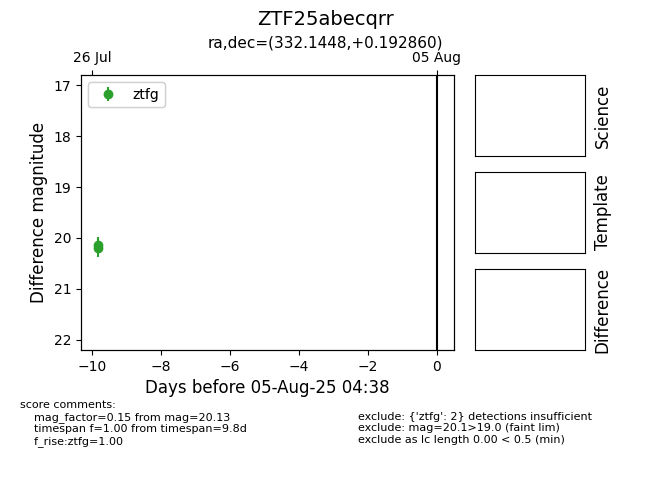

Target ZTF25abecqrr at 2025-08-05 04:38, see:
FINK: fink-portal.org/ZTF25abecqrr
Lasair: lasair-ztf.lsst.ac.uk/objects/ZTF25abecqrr
ALeRCE: alerce.online/object/ZTF25abecqrr
alt names
ZTF25abecqrr (ztf,fink)
coordinates:
equatorial (ra, dec) = (332.1448,+0.19286)
galactic (l, b) = (61.0541,-42.30236)
photometry
last ztfg=20.13
2 ztfg detections
